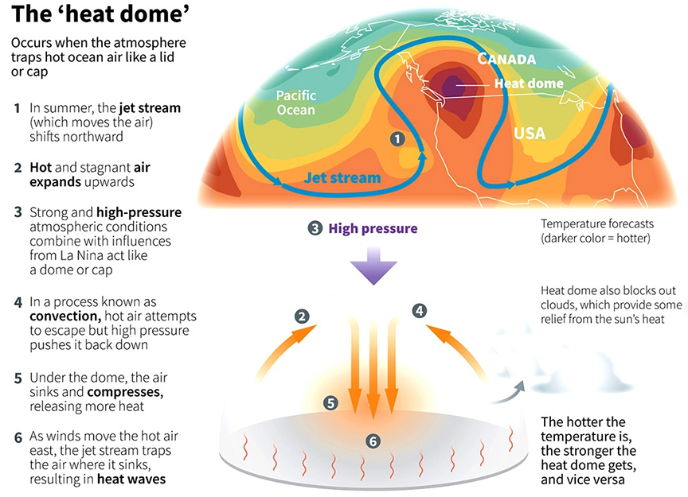

Heat Waves and Heat Dome | 20 Jul 2021
Why in News
- The Pacific North-west, known for its moderate climate, is experiencing a “historic” heat wave. The heat wave is being described as a “Heat Dome”.
- It has stretched emergency services, with at least 134 people dying suddenly since the last few days in parts of Canada.
Heat Waves and Heat Dome
- Heat Wave:
- A heat wave is a period of abnormally high temperatures, more than the normal maximum temperature that lasts for more than two days.
- Heat waves can occur with or without high humidity and have the potential to cover a large area, exposing a high number of people to hazardous heat.
- Increasing Trend of Heat Waves:
- In the past few decades, heat waves have become larger, affecting 25% more land area in the Northern Hemisphere than they did in 1980.
- Including the ocean areas, heat waves have grown by 50%.
- Heat Dome:
- A heat dome occurs when the atmosphere traps hot ocean air like a lid or cap.
- As per National Oceanic and Atmospheric Administration (NOAA), USA, a heat dome is created when strong high-pressure atmospheric conditions combine with weather patterns like La Niña.
- They are more likely to form during La Niña years like 2021, when waters are cool in the eastern Pacific and warm in the western Pacific. creating vast areas of sweltering.
- Duration of Heat Domes:
- According to NOAA, a heat dome typically lasts a week.
- The formation after a week becomes too bog to keep standing and falls over, releasing the trapped air and ending the swelter.
- Causes of Formation of Heat Dome:
- Change in Ocean Temperature: The phenomenon begins when there is a strong change (or gradient) in ocean temperatures.
- In the process known as convection, the gradient causes more warm air, heated by the ocean surface, to rise over the ocean surface.
- As prevailing winds move the hot air east, the northern shifts of the jet stream trap the air and move it toward land, where it sinks, resulting in heat waves.
- Change in Atmospheric Pressure: Heat waves begin when high pressure in the atmosphere moves in and pushes warm air toward the ground. This effect is fuelled by heat rising from the ocean, creating an amplification loop.
- The high-pressure system pressing down on the ground expands vertically, forcing other weather systems to change course.
- It even minimizes wind and cloud cover, making the air more stifling.
- This is also why a heat wave parks itself over an area for several days or longer.
- Climate Change: The rising temperatures lead to hotter weather. Heat waves have been a regular phenomenon on land.
- However, global warming has caused them to be hotter with a longer duration and an increased frequency.
- Scientists studying the climate tend to agree that the heat waves occurring today are more likely to be a result of climate change for which humans are responsible.

- Impact of Heat Waves and Heat Domes:
- Risk of Wildfires: The heat domes act as fuel to wildfires, which destroys a lot of land area every year in countries like the US.
- Prevents Cloud Formation: The condition also prevents clouds from forming, allowing for more radiation from the sun to hit the ground.
- Heat Strokes and Sudden Fatalities: The very high temperatures or humid conditions pose an elevated risk of heatstroke or heat exhaustion.
- Older people and people with chronic illness such as heart disease, respiratory disease, and diabetes are more susceptible to heatstroke, as the body’s ability to regulate heat deteriorates with age.
- Houses without air conditioners experience an unbearable rise in temperature of their home which can lead to sudden deaths.
- Effect on Vegetation: The trapping of heat can also damage crops, dry out vegetation and result in droughts.
- Increased Energy Demands: The sweltering heat wave also leads to rise in energy demand, especially electricity, leading to pushing up rates.
- Power Related Issues: Heat waves are often high mortality disasters.
- Avoiding heat-related disasters depends on the resilience of the electrical grid, which can fail if electricity demand due to air conditioning use exceeds supply.
- As a result, there is the double risk of infrastructure failure and health impacts.
Steps for Avoiding Heat Waves
- Individual Level:
- Staying Hydrated: Staying indoor and at rest in a very dry room with about 10% relative humidity, and drinking water constantly (for producing sweat), can help avoid overheating at temperatures as high as 46℃.
- However, there is a limit to this, called the wet-bulb temperature, which considers heat and humidity, beyond which humans cannot tolerate high temperatures.
- Altering Workout Routines: Exercising early in the morning when it is still cool or in air conditioned indoor spaces.
- Skipping workout routines can also be considered given the extreme heat.
- Public Level:
- Public Cooling Shelters: A number of emergency cooling shelters can be opened so that people without domestic air conditioning units can escape the heat.
- Air-conditioned rooms and buildings are the biggest help to people caught under a heat dome.
- Portable ACs: Portable air-conditioning units, along with fans and even ice are also useful.
- Long Term Solutions:
- Afforestation: Trees don’t just provide much-needed shade for a sweaty city. The water evaporating from their leaves can cool a neighborhood by a few degrees during the hottest periods.
- Tree leaves also absorb and filter local air pollution; heat waves can worsen urban smog, which may put comorbids at risk.
- Replacing Dark Roofs: A big reason that cities are so much hotter than rural areas is that they are covered by dark roofs, roads and parking lots that absorb and retain heat.
- Replacing the dark surfaces with lighter more reflective materials will result in a comparatively cooler environment.
- Preparing for the Blackout: A widespread blackout during a heat wave can leave millions of people without electricity for fans or air-conditioners.
- Smarter grids and new forecasting tools could help electric utilities prepare for heat waves.
- Using electronic controls to pre-cool buildings before temperatures peak in the daytime.